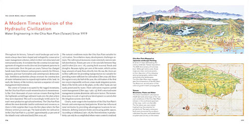

Water Urbanisms – East, a selection of the world’s leading experts on urbanism reflect on the changing role that water plays in cities. They investigate the possible consequences of global warming on urban water supplies, including new problems with drought and flooding, as well as the new pressures of dealing with storm waters and basin management.
This book is organized in three sections, each of which explores urban water use through a particular theme. Contemporary Positions examines a broad array of specific modern water projects. Re-visiting/Re-editing Urban Water Projects studies the history of water urbanisms from around the world in light of today’s challenges and research. Explorations & Speculations: Excerpts on Water Urbanisms looks at the role of design in urban water infrastructures. This richly illustrated book offers a wide-ranging account of the myriad roles water plays in our modern city centers.
Black Books is a British sitcom created by Dylan Moran and Graham
Linehan that was broadcast on Channel 4 from